AFK Arena benzeri mobil gezinme; sisli taş, soluk kemik ve pirinç vurgular. İlk giriş v02, ana menü görsel adayı ve diğer ekranların yerleşimleri. Oyuncu hesabı, backend ve Godot ile bağlantı yok.
İlk oyuna giriş taslağını aç ↗ · Tüm sistem prototipi · Eksik listesi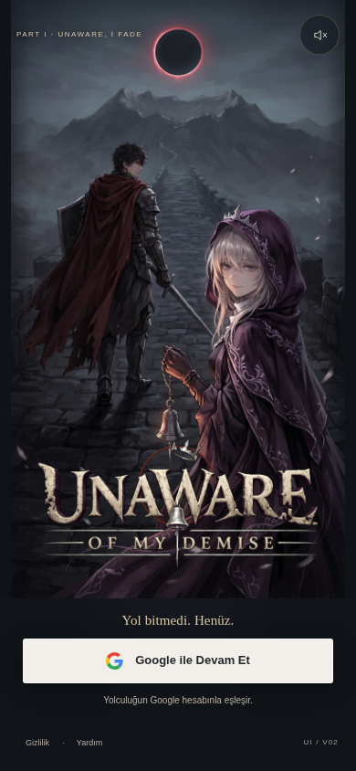
10 durum · Ayrı etkileşimli giriş taslağı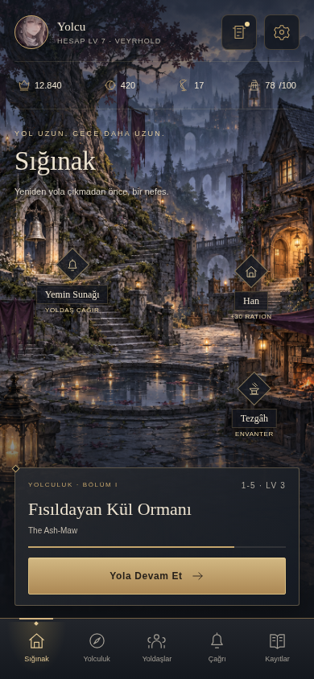
Yeni ortam görseli · Ana menü adayı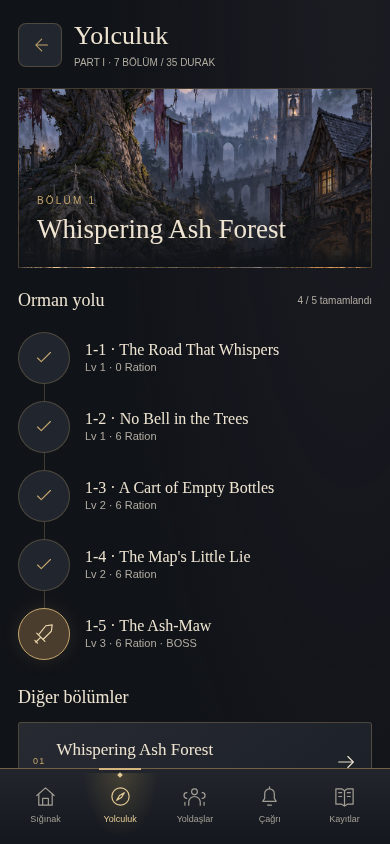
7 bölüm / 35 durak · Kaynak adları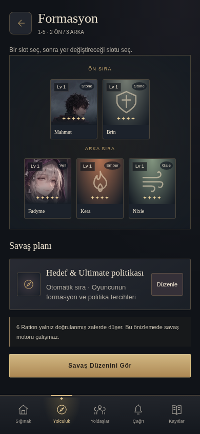
2 ön / 3 arka · Slot değişimi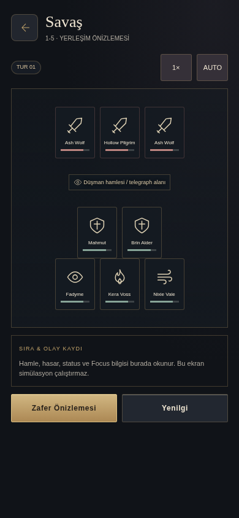
Motor çalıştırmayan kompozisyon taslağı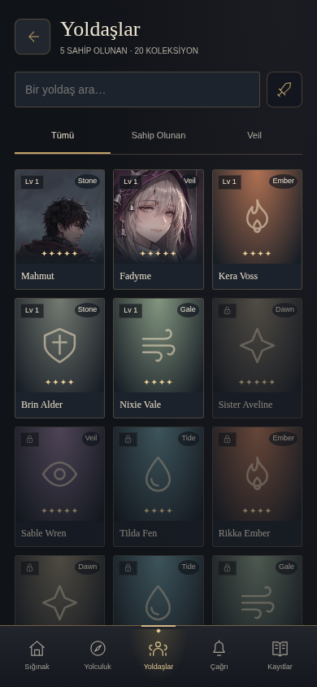
20 tanım · Eksik portreler simgeyle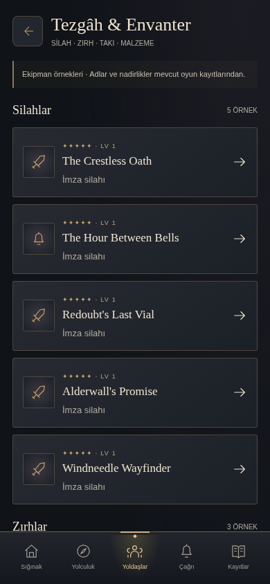
Kaynak öğeler · İşlem yapmaz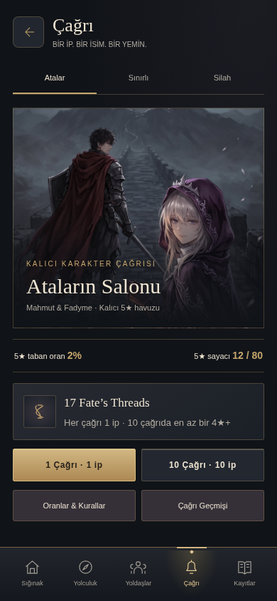
Oran / pity / açık onay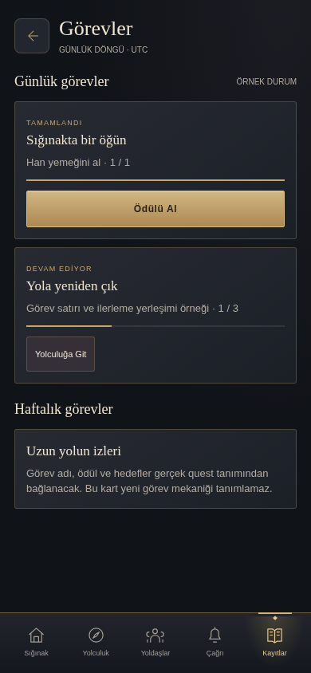
Örnek ilerleme · Yeni quest tanımı değil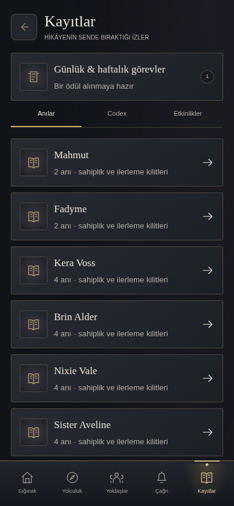
Anılar / Codex / Etkinlikler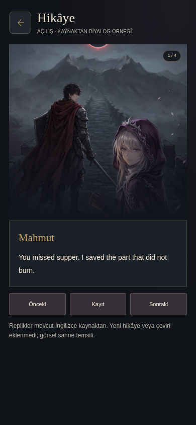
Mevcut İngilizce replikler · Temsili artwork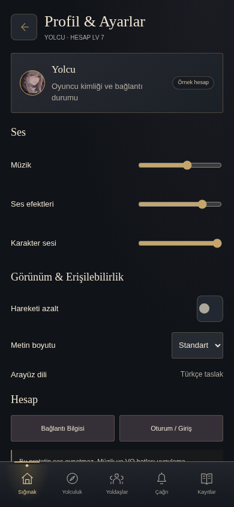
Büyük metin / azaltılmış hareket